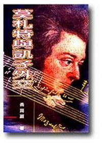
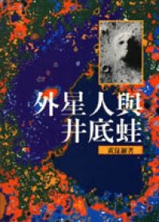
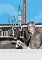
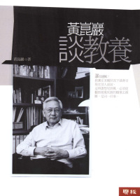
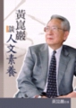
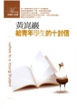
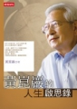

臺灣
國立成功大學醫學院
黃創院院長 崑巖教授
著作一覽表
封面 |
書名 |
出版日期 |
出版社 |
國際標準書號(ISBN/ISSN) 規格 |
簡介 |
|---|---|---|---|---|---|
 |
《莫札特與凱子外交》 |
1998.02.01 |
中華日報(出版) 紅螞蟻(總經銷) |
ISBN13： 9789579645232 ; ISBN 10： 957-9645-23-X (平裝); 25開15*21cm; 243頁/ 出版地：台灣 |
|
 |
《外星人與井底蛙》 |
1999.01.10 |
遠哲科學教育基金會 |
ISBN 13： 9789579852760 ; ISBN 10： 9579852766 ; EAN： 9789579852760 ; 平裝/254頁/25K/ 21公分/普級/單色印刷/初版一刷 出版地：台灣 |
|
 |
《醫眼看人間》 |
2000.04.01 |
天下雜誌 |
ISBN 13： 9789570388107 ; ISBN 10： 9570388102 ; EAN： 9789570388107 ; 平裝/200頁/普級/單色印刷/初版/出版地：台灣 |
|
 |
《生死關頭見豁達》 |
2000.12.01 |
健行文化 |
ISBN 13： 9789867753489 ; ISBN 10： 9867753488 ; EAN： 9789867753489 ; 平裝/224頁/25K/普級/單色印刷/初; 出版地：台灣 |
|
 |
《黃崑巖談教養》 |
2004.12.20 |
聯經 |
ISBN 13：9789570827606 ; ISBN 10： 9570827602 ; EAN： 9789570827606 ; 平裝 / 220頁 / 25K / 15*21cm/ 普級 / 單色印刷 / 初版 / 出版地：台灣 |
|
 |
《黃崑巖談人生這堂課》 |
2005.07.01 |
健行文化 |
ISBN 13：9789867753670 ; ISBN 10： 9867753674 ; EAN： 9789867753670 ; 平裝 / 240頁 / 25開 /15*21cm/ 普級 / 單色印刷 / 初版 / 出版地：台灣 |
|
 |
《黃崑巖談人文素養》 |
2006.02.01 |
健行文化 |
ISBN 13：9789867753939 ; ISBN 10： 9867753933 ; EAN： 9789867753939 ; 平裝 / 256頁 / 25K /15*21cm/ 普級 / 單色印刷 / 初版 / 出版地：台灣 |
|
 |
《給青年學生的十封信》 |
2006.05.16 |
聯經 |
ISBN 13：9789570830101 ; ISBN 10： 9570830107 ; EAN： 9789570830101 ; 平裝 / 220頁 / 32K / 普級 / 單色印刷 / 初版 / 出版地：台灣 |
|
 |
《黃崑巖的人生啟思錄》 |
2006.11.20 |
時報 |
ISBN 13：9789571345819 ; ISBN 10： 9571345814 ; EAN： 9789571345819 ; 平裝 / 196頁 / 25開15*21cm / 普級 / 單色印刷 / 初版 / 出版地：台灣 |
|
 |
《黃崑巖回憶錄》 |
2007.04.23 |
聯經 |
ISBN 13：9789570831474 ; ISBN 10： 9570831472 ; EAN： 9789570831474 ; 平裝 / 257頁 / 25K / 21cm / 普級 / 單色印刷(部分彩圖版) / 初版 / 出版地：台灣 |
|
 |
《我不一樣的人生》 |
2008.06.10 |
聯經 |
ISBN 13：9789570832860 ; ISBN 10： 957083286X ; EAN： 9789570832860 ; 平裝 / 304頁 / 25K / 15*21cm / 普級 / 單色印刷 / 初版 / 出版地：台灣 |
|
 |
《黃崑巖談有品社會》 |
2009.08.27 |
聯經 |
ISBN 13：978-957-08-3450-5; ISBN 10： 9570834501 ; EAN： 9789570834505 ; 平裝 / 216頁 / 25K / 15*21cm / 普級 / 單色印刷 / 初版 / 出版地：台灣 |
|
 |
《醫師不是天使》 |
2010.01.01 |
健行文化 |
ISBN 13：9789866798252; ISBN 10： 9866798259 ; EAN： 9789866798252 ; 平裝 / 240頁 / 25K / 15*21cm / 普級 / 單色印刷 / 初版 / 出版地：台灣 |